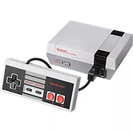

La Nintendo Entertainment System (NES) est une console de jeux vidéo emblématique lancée par Nintendo en 1985 en Amérique du Nord (et en 1983 au Japon sous
le nom de Famicom). Elle a joué un rôle clé dans la revitalisation de l'industrie du jeu vidéo après la crise du jeu vidéo de 1983.La NES était une console 8
bits et a marqué l'introduction de nombreux jeux qui sont devenus des classiques, comme Super Mario Bros, The Legend of Zelda, Metroid, et Donkey Kong. Elle
a introduit des manettes avec des boutons (le fameux D-pad), et a permis aux joueurs de découvrir des expériences de jeu à domicile plus immersives. La
console est célèbre pour son design compact et ses cartouches de jeu, qui ont permis aux joueurs de collectionner plusieurs titres. Elle a également été
pionnière dans la création de franchises qui sont toujours populaires aujourd'hui. La NES est donc une pierre angulaire dans l'histoire du jeu vidéo et un
symbole de la transition vers les consoles modernes.